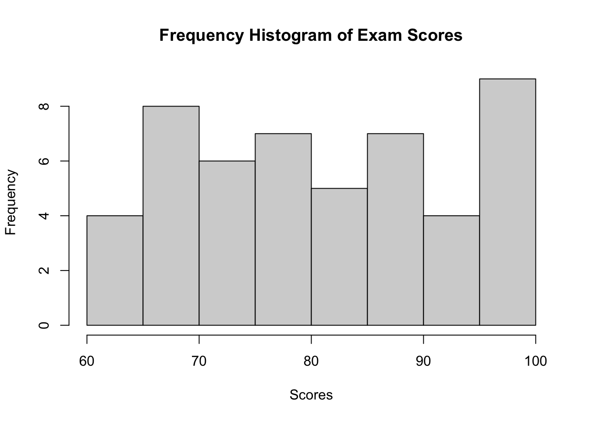

library(ggplot2)
library(dplyr)
library(tidyr)
library(scales)13 Data Visualization: with examples in R
This chapter explores fundamental types of data visualizations: bar plots, histograms, and box plots, in particular.
13.1 Introduction to Data Types and Visualization
Before diving into specific visualization techniques, it’s crucial to understand the different types of data you might encounter and how they influence your choice of visualization method. We’ll explore these concepts with practical examples using the ggplot2 library in R.
First, let’s load the necessary libraries:
13.2 Bar Plots
Bar plots are excellent for displaying categorical data or summarizing continuous data by groups.
13.2.1 Understanding Bar Plots
A bar plot represents data using rectangular bars with heights proportional to the values they represent. They are used to compare different categories or groups.
Key components of a bar plot: 1. X-axis: Represents categories 2. Y-axis: Represents values (can be counts, percentages, or any numerical value) 3. Bars: Rectangle for each category, height corresponds to its value
13.2.1.1 Example Data
Let’s use a simple dataset of fruit sales:
fruits <- c("Apple", "Banana", "Orange", "Grape")
sales <- c(120, 85, 70, 100)
# Create a data frame
df <- data.frame(fruit = fruits, sales = sales)13.2.2 Hand-Drawn Bar Plot
To create a bar plot by hand:
- Draw a horizontal line (x-axis) and a vertical line (y-axis) perpendicular to each other.
- Label the x-axis with your categories (fruits), evenly spaced.
- Label the y-axis with a suitable scale for your values (sales, 0 to 120 in increments of 20).
- For each category, draw a rectangle (bar) whose height corresponds to its value on the y-axis scale.
- Color or shade each bar if desired.
- Add a title and labels for both axes.
Tip
When drawing by hand, use graph paper for more precise measurements and straighter lines. Choose a scale that allows all your data to fit while maximizing the use of space.
13.2.3 Bar Plot in Base R
# Create bar plot
barplot(sales, names.arg = fruits,
main = "Fruit Sales",
xlab = "Fruit Types", ylab = "Sales")13.2.4 Bar Plot with ggplot2
# Create bar plot with ggplot2
ggplot(df, aes(x = fruit, y = sales)) +
geom_bar(stat = "identity", fill = "skyblue") +
labs(title = "Fruit Sales",
x = "Fruit Types", y = "Sales") +
theme_minimal()
13.2.5 Interpreting Bar Plots
When interpreting a bar plot, consider the following:
- Relative Heights: Compare the heights of the bars to understand which categories have higher or lower values.
- Ordering: Sometimes, bars are ordered by height to make comparisons easier.
- Patterns: Look for any patterns or trends across categories.
- Outliers: Identify any bars that are much taller or shorter than the others.
13.2.5.1 Example Interpretation
For our fruit sales data:
- Apples have the highest sales (120), followed by Grapes (100).
- Oranges have the lowest sales (70).
- There’s a considerable difference between the highest (Apples) and lowest (Oranges) sales.
- Bananas and Grapes have similar sales figures, in the middle range.
This information could be useful for inventory management or marketing strategies in a fruit shop.
Note
Bar plots are great for comparing categories, but they don’t show the distribution within each category. For that, you might need other plot types like box plots.
13.3 Histograms
Histograms visualize the distribution of a continuous variable by dividing it into intervals (bins) and showing the frequency or density of data points in each bin.
13.3.1 Understanding Histograms
Key components of a histogram: 1. X-axis: Represents the variable’s values, divided into bins 2. Y-axis: Represents frequency, relative frequency, or density 3. Bars: Rectangle for each bin, height corresponds to the y-axis measure
There are three main types of histograms:
- Frequency Histogram: The y-axis shows the count of data points in each bin.
- Relative Frequency Histogram: The y-axis shows the proportion of data points in each bin (frequency divided by total number of data points).
- Density Histogram: The y-axis shows the density, which is the relative frequency divided by the bin width. The total area of all bars sums to 1.
13.3.1.1 Example Data
Let’s use a dataset of 50 student exam scores (out of 100):
set.seed(123) # for reproducibility
scores <- round(runif(50, min = 60, max = 100))13.3.2 Hand-Drawn Histogram
To create a frequency histogram by hand:
- Find the range of your data.
- Choose a number of bins (let’s use 7 bins).
- Create a frequency table.
- Draw x and y axes.
- Label x-axis with bin ranges and y-axis with frequency.
- Draw a rectangle for each bin, with height corresponding to its frequency.
- Add a title and labels for both axes.
For a relative frequency histogram, divide each frequency by the total number of data points before drawing the bars.
For a density histogram, divide the relative frequency by the bin width before drawing the bars.
Tip
The number of bins can affect the interpretation. Too few bins may obscure important features, while too many may introduce noise. A common rule of thumb is to use the square root of the number of data points as the number of bins.
13.3.3 Histograms in Base R
# Frequency Histogram
hist(scores, breaks = 7,
main = "Frequency Histogram of Exam Scores",
xlab = "Scores", ylab = "Frequency")
# Relative Frequency Histogram
hist(scores, breaks = 7, freq = FALSE,
main = "Relative Frequency Histogram of Exam Scores",
xlab = "Scores", ylab = "Relative Frequency")
# Density Histogram
hist(scores, breaks = 7, freq = FALSE,
main = "Density Histogram of Exam Scores",
xlab = "Scores", ylab = "Density")
lines(density(scores), col = "red", lwd = 2)
13.3.4 Histograms with ggplot2
# Create a data frame
df <- data.frame(score = scores)
# Frequency Histogram
ggplot(df, aes(x = score)) +
geom_histogram(bins = 7, fill = "skyblue", color = "black") +
labs(title = "Frequency Histogram of Exam Scores",
x = "Scores", y = "Frequency") +
theme_minimal()
# Relative Frequency Histogram
ggplot(df, aes(x = score, y = ..count.. / sum(..count..))) +
geom_histogram(bins = 7, fill = "skyblue", color = "black") +
labs(title = "Relative Frequency Histogram of Exam Scores",
x = "Scores", y = "Relative Frequency") +
theme_minimal()Warning: The dot-dot notation (`..count..`) was deprecated in ggplot2 3.4.0.
ℹ Please use `after_stat(count)` instead.# Density Histogram
ggplot(df, aes(x = score)) +
geom_histogram(aes(y = ..density..), bins = 7, fill = "skyblue", color = "black") +
geom_density(color = "red", size = 1) +
labs(title = "Density Histogram of Exam Scores",
x = "Scores", y = "Density") +
theme_minimal()Warning: Using `size` aesthetic for lines was deprecated in ggplot2 3.4.0.
ℹ Please use `linewidth` instead.
13.3.5 Interpreting Histograms
When interpreting a histogram, consider:
- Central Tendency: Where is the peak of the distribution?
- Spread: How wide is the distribution?
- Shape: Is it symmetric, skewed, or multi-modal?
- Outliers: Are there any unusual values far from the main distribution?
13.4 Box Plots and Tukey Box Plots
Box plots, also known as box-and-whisker plots, provide a concise summary of a distribution. We’ll focus on the Tukey-style box plot, named after the statistician John Tukey who popularized this type of plot.
13.4.1 Understanding Box Plots
A box plot represents five key statistics:
- Minimum value (excluding outliers)
- First quartile (Q1)
- Median
- Third quartile (Q3)
- Maximum value (excluding outliers)
Additionally, box plots show:
- Whiskers: Lines extending from the box to the minimum and maximum values (excluding outliers)
- Outliers: Individual points beyond the whiskers
13.4.1.1 Calculating Quartiles and Outliers
To create a box plot, follow these steps:
- Order your data from smallest to largest.
- Find the median (middle value if odd number of data points, average of two middle values if even).
- Find Q1 (median of lower half of data) and Q3 (median of upper half of data).
- Calculate the Interquartile Range (IQR) = Q3 - Q1
- Determine outliers using Tukey’s rule:
- Lower outliers: < Q1 - 1.5 * IQR
- Upper outliers: > Q3 + 1.5 * IQR
Note
The factor 1.5 in Tukey’s outlier rule is based on the properties of the normal distribution. For normally distributed data, this rule identifies about 0.7% of the data as potential outliers.
13.4.1.2 Example Data
Let’s use a small dataset to illustrate:
data <- c(2, 3, 4, 5, 6, 7, 8, 9, 10, 15, 50)13.4.2 Hand-Drawn Tukey Box Plot
To create a Tukey box plot by hand:
- Draw a vertical line representing the range from minimum to maximum (2 to 15 in our example, excluding the outlier).
- Draw a box from Q1 to Q3.
- Draw a horizontal line through the box at the median.
- Draw whiskers from the box to the minimum and maximum values (excluding outliers).
- Represent the outlier (50) as an individual point beyond the whisker.
- Add a scale to the vertical axis and label it.
13.4.3 Box Plot in Base R
# Create box plot
boxplot(data, main = "Box Plot of Sample Data",
ylab = "Values", outcol = "red", outpch = 20)13.4.4 Tukey Box Plot with ggplot2
# Create a data frame
df <- data.frame(value = data)
# Create Tukey box plot with ggplot2
ggplot(df, aes(x = "", y = value)) +
stat_boxplot(geom = "errorbar", width = 0.2) +
geom_boxplot(fill = "white", outlier.shape = 20, outlier.color = "red") +
labs(title = "Tukey Box Plot of Sample Data",
x = "", y = "Values") +
theme_minimal() +
theme(axis.title.x = element_blank(),
axis.text.x = element_blank(),
axis.ticks.x = element_blank())
13.4.5 Interpreting Box Plots
When interpreting a box plot, consider the following:
- Central Tendency: The median shows the center of the distribution.
- Spread: The box (IQR) represents the middle 50% of the data.
- Skewness: If the median line is closer to one end of the box, the distribution is skewed.
- Outliers: Points beyond the whiskers are potential outliers.
- Comparisons: When comparing multiple box plots, look at relative positions of medians, box sizes, and presence of outliers.
13.5 Conclusion
In this chapter, we explored three fundamental types of data visualizations: bar plots, histograms, and box plots. We demonstrated how to create these plots by hand, using R’s base plotting system, and using the ggplot2 library.
Each type of plot serves a different purpose: - Bar plots are excellent for comparing categories. - Histograms show the distribution of a continuous variable. - Box plots provide a concise summary of a distribution, highlighting central tendency, spread, and outliers.
Remember, the choice of visualization depends on your data type and the insights you want to convey. Always consider your audience and the story you want to tell with your data when selecting and designing your visualizations.
Practice creating these plots by hand to deepen your understanding of their construction and interpretation. Then, leverage the power of R and ggplot2 to quickly create and customize these visualizations for larger datasets and more complex analyses.